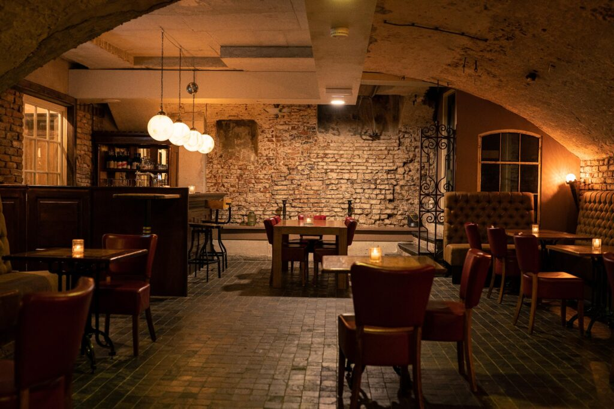
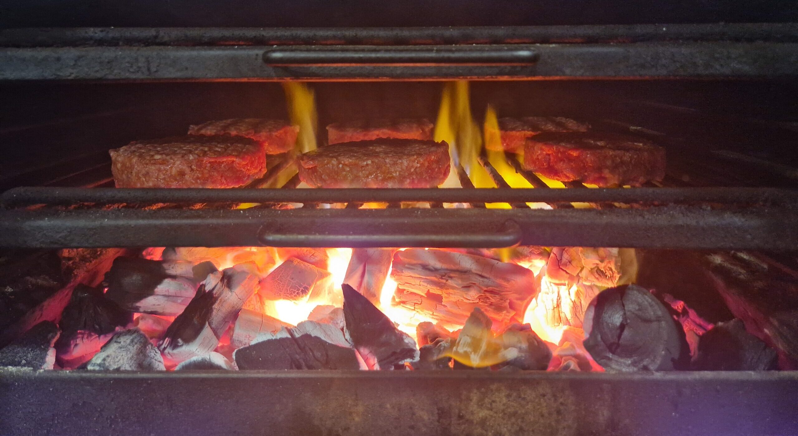

High Tea
vanaf 2 personen, van 12.00 tot 17.00 uur
€ 21,50 p.p.
- Onbeperkt koffie en thee
- Diverse sandwiches
- Chef's special soup
- Diverse zoete hapjes

Eetcafé & gastropub
since 1971
Een Engelse pub aan de zonzijde van de Houtmarkt, midden in Hanzestad Zutphen. Koffie, high tea, een pint Guinness of een burger van de grill.
Woensdag t/m zondag geopend
Aan de zonzijde van de Houtmarkt, in het centrum van het mooie historische Hanzestadje Zutphen, vind je gastropub Uffie's. Eenmaal binnen waan je je in een gezellige Engelse atmosfeer.
Je kunt bij ons terecht voor een heerlijke kop koffie of een high tea, maar ook een lekkere pint of Guinness of een mooi glas wijn behoren tot de vele mogelijkheden.


200 gram grain-fed rundvlees, medium gebakken, met frites en mayonaise. Ook vegetarisch met kikkererwten of veganistisch met oesterzwam.
Naar de burgersDe keuken is open van 12.00 tot 20.00 uur, op woensdag tot 16.00 uur. v vegetarisch, g glutenvrij.
Deze gerechten staan zowel op de lunch- als op de dinerkaart.
met tapenade en kruidenboter
geserveerd met brood en boter
geserveerd met brood en boter
met meloen en sinaasappel
met truffelmayonaise en geraspte kaas
met zongedroogde tomaat en kruidendressing
geserveerd met brood en boter
geserveerd met frites en salade
met erwtencreme
keuze uit knoflooksaus of cocktailsaus
met frites, appelmoes en sla. Keuze uit: kipnuggets, frikandel, loempia's of kroket
Alleen op de lunchkaart.
geserveerd met frites en mayonaise
geserveerd met rauwkost en ketchup
met atjar, kroepoek, salade en frites
Alleen op de dinerkaart.
geserveerd met warme groenten en gebakken aardappelen of frites
met mango en cashewnoten
250 gram
van vrijdag t/m zondag een wisselend visgerecht
met tomaat, courgette en basilicum
Burgers worden geserveerd met frites en mayonaise.
200 gram medium gebakken grain-fed rundvlees
met cheddar kaas
met bacon en cheddar
met bacon, cheddar, gebakken champignons, gebakken ui en gebakken ei
met cheddar kaas
burger van kikkererwten, kerrie, komijn en koriander
veganistisch
op elke burger mogelijk
per topping
whiskey, koffie, slagroom
Grand Marnier, koffie, slagroom
amaretto, koffie, slagroom
Tia Maria, koffie, slagroom
bruine rum, koffie, slagroom
vanille-ijs, espresso, caramelblokjes, caramelsiroop, caramelsaus
vanille-ijs, espresso, chocoladekrullen, chocoladesiroop en chocoladesaus
wortel-walnoot, brownie, appelkruimel
* ook met havermelk (€ 0,50 extra). Koffie is ook verkrijgbaar als decafé.
karamel, kaneel, vanille, hazelnoot, chocola
diverse
munt, gember of sinaasappel
amaretto en slagroom
Bailey's en slagroom
regular en zero
blauw of rood
Wisseltaps: vraag de bediening naar het huidige aanbod.
0,22 l
0,25 l
0,5 l
0,25 l
0,5 l
half pint
pint
0,25 l
0,5 l
diverse
diverse
glasfles
Spaans, veel tropisch fruit en citrus. Fris met zachte zuren.
Spaans, appel, peer en abrikoos. Mineralige wijn.
Spaans, druif is Maturana, veel rijp fruit zoals peer, perzik, meloen en venkel, zachte afdronk.
Spaans, rijpe besjes, aardbeien, venkel. Fruitige en frisse rosé.
Spaans, druif Garnacha, bloemig, aardbeien. Vol en krachtig.
Spaans, bramen, donkere kersen en bessen. Licht en fruitig, soepele rode wijn.
Italiaans, pruimen, kersen, zongedroogd fruit. Fruitige volle wijn.
Italiaans, druif is glera, droog, geel fruit. Bruisend.
Spaans, druif is garnacha, droog, rood fruit. Bruisend.
Zachte en zoete wijn.
gin en tonic
Aperol, prosecco, bruiswater
ginger ale en Johnnie Walker
vodka, passievrucht en vanille
vodka, koffie, koffielikeur
limoncello, prosecco en bruiswater
een zoete, volle smaak
zachter en complexer dan de Ruby
fruitig, elegant zoet en fijn droog
vermouth met vanilletonen en aromatische kruiden
Uit de hoogste en koudste distilleerderij van Schotland. Een aangenaam vriendelijk, zacht en vol karakter. Ideaal voor een beginnende whiskydrinker.
Dimple is uniek in zijn eenvoud, rijk van smaak, je herkent mango, mokka en noten. De afdronk die lang in de mond blijft hangen geeft een warm en prettig gevoel.
Minimaal 12 jaar gerijpt in Amerikaanse bourbonvaten en Spaanse eiken sherryvaten. Mooi gebalanceerd, moutig en sterk van smaak.
De rijping op eikenhouten ex-bourbonvaten voegt tonen van vanille en perzik toe. Een perfecte balans tussen soepelheid en complexiteit.
De onmiskenbare smaak van aromatische kruiden, kaneel en peper, die over het midden van je tong bruisen.
Opent met rokerige, kruidige en zoete aroma's. Een volle smaak met lagen van turfrook, zeewier, jodium, zoete vanille en warme kruiden.
Werelds eerste triple malt whisky met kruidige en zachte vanilletonen, moutig en rond. Vol, zacht en kruidig eikenhout.
Een rond, zoet smaakprofiel met verse citrus, zoete rook, scherpe kruiden en traditionele ziltige Talisker-tonen.
De traditionele vaten maken de whisky zacht en soepel, het Europese hout geeft een diepe, fruitige volle smaak.
Drievoudig gedistilleerd en ten minste 10 jaar gerijpt in bourbonvaten die hem honing-, vanille- en melkchocolade-aroma geven.
Tonen van kruiden, noten, vanille en een hint van zoete sherry. Drie keer gedistilleerd: een milde, zachte whiskey.
Het combineren van alle drie typen Ierse whiskey zorgt voor het zachte maar ook complexe karakter.
Een Ierse blend van graan- en maltwhiskey gerijpt in bourbonvaten. Tonen van citrus en peper met appel en nootmuskaat.
Aangenaam zoet met tonen van bruine suiker en kruidigheid die eiken verraadt. Toffee, donker fruit en anijs.
Zacht en zoet, met een rijk bourbonkarakter dankzij minimaal 4 jaar rijping in gebrande vaten van Amerikaans eiken.
Fris en fruitig, daarna honing en delicate hints van kruiden. Met wat tijd in het glas komt bittere sinaasappel naar voren, met chocolade-rozijnen.
met tapenade en kruidenboter
jonge en oude kaas
4 soorten kaas
voor 2 personen, ook vegetarisch mogelijk
10 stuks
8 stuks
12 stuks
8 stuks
10 stuks
10 stuks
10 stuks
8 stuks
vegan, 6 stuks
Van een high tea met z'n tweeën tot een borrel met het hele bedrijf. Prijzen per persoon.

vanaf 2 personen, van 12.00 tot 17.00 uur
€ 21,50 p.p.
vanaf 2 personen
€ 19,75 p.p.
vanaf 2 personen
€ 19,75 p.p.
vanaf 10 personen
€ 17,50 p.p.
vanaf 20 personen
€ 5,75 p.p.
vanaf 20 personen
€ 7,75 p.p.
vanaf 20 personen
€ 27,75 p.p.
Graag verwelkomen wij u in onze ruime en sfeervolle gewelvenkelder.
De kelder biedt plek aan kleinere groepen en aan groepen tot 90 personen. U kunt er terecht voor een lunch, diner, borrel of feest. Vraag naar onze arrangementen of een offerte op maat.
Loop gerust eens de kelder in, wij staan u graag te woord. Specifieke wensen? Mail naar info@uffies.nl of bel 0575-473153.
90personen maximaal
Laat hieronder weten wanneer je komt. Voor vandaag reserveren? Bel ons op 0575-473153.
| Woensdag | 10.00 – 17.00 |
|---|---|
| Donderdag | 10.00 – 22.00 |
| Vrijdag | 10.00 – 00.00 |
| Zaterdag | 10.00 – 00.00 |
| Zondag | 10.00 – 22.00 |
Keuken 12.00 – 20.00, woensdag tot 16.00.
Houtmarkt 71